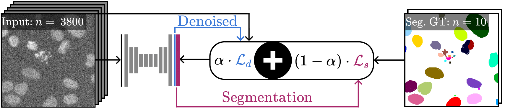
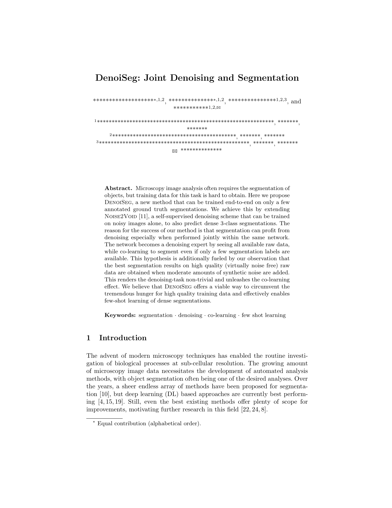
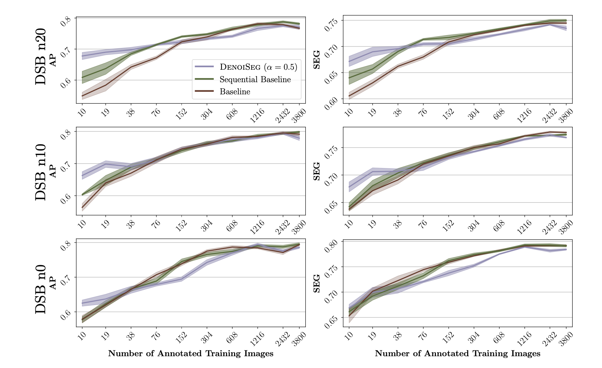

DenoiSeg: Joint Denoising and Segmentation
|
* Equal Contribution (Alphabetical order)
|
Microscopy image analysis often requires the segmentation of objects, but training data for this task is typically scarce and hard to obtain.
Here we propose DenoiSeg, a new method that can be trained end-to-end on only a few annotated ground truth segmentations.
We achieve this by extending Noise2Void, a self-supervised denoising scheme that can be trained on noisy images alone, to also predict dense
3-class segmentations. The reason for the success of our method is that segmentation can profit from denoising, especially when performed jointly within the same network.
The network becomes a denoising expert by seeing all available raw data, while co-learning to segment, even if only a few segmentation labels are available.
This hypothesis is additionally fueled by our observation that the best segmentation results on high quality (very low noise) raw data are obtained when moderate amounts of synthetic noise are added. We believe that DenoiSeg offers a viable way to circumvent the tremendous hunger for high quality training data and effectively enables few-shot learning of dense segmentations.
|

|
|
The proposed DenoiSeg training scheme. A U-Net is trained with a joint self-supervised denoising loss and a classical segmentation loss. Both losses are weighted with respect to each other by a hyperparameter $\alpha$. In this example, $\mathcal{L_{d}}$ can be computed on all 3800 training patches, while $\mathcal{L_{s}}$ can only be computed on the 10 available annotated ground truth patches that are available for segmentation. Some results are shown in the Qualitative Results Section.
|
How to use DenoiSeg
Welcome! We believe our work is a significant step forward in solving the problem of biomedical image segmentation when not many annoated ground truth images are available for training Deep Learning networks. We provide our results on three diverse datasets which can be downloaded through our notebooks here. Some qualitative segmentation results with DenoiSeg can be found below. For more detailed results, please refer to DenoiSeg wiki. Please enjoy our results, and if you're so inclined, try the notebooks yourself!
Paper and Supplementary Material
|

|
Buchholz*, Prakash*, Krull, Jug.
DenoiSeg: Joint Denoising and Segmentation.
Preprint, 2020.
Bibtex
|
Qualitative Results
We show results on three diverse datasets: DSB 2018, a developing Fly Wing and a Mouse Nuclei dataset.
For each dataset, we add Gaussian noise with zero mean and standard deviation 10 and 20.
The dataset names are accordingly extended by n0, n10 and n20 to indicate the amount of additional noise.
We compare against two baselines: (i) DenoiSeg trained purely for segmentation (referred to as Baseline), and a sequential scheme based on Prakash et al. that first trains a denoiser and then the aforementioned baseline (referred to as Sequential).

|
|
Qualitative results on DSB n10 (first row), Fly Wing n10 (second row) and
Mouse Nuclei n10 (third row). The first column shows an example test image. Numbers
indicate how many noisy input and annotated ground truth (GT) patches were used
for training. Note that segmentation GT was only available for at most 10 images,
accounting for less than 0.27% of the available raw data. Other columns show depicted
inset regions, from left to right showing: raw input, segmentation GT, results of two
baseline methods, and our DenoiSeg segmentation and denoising results.
Furhter results can be found on the DenoiSeg Wiki.
|
We compare the results of DenoiSeg with the above mentioned baselines in terms of Average Precision (AP) score and
SEG-Score. We evaluated DenoiSeg setups with different
values of hyperparameter $\alpha$. The figure below presents an evaluation of the DenoiSeg performance for $\alpha=0.5$ across three different noise levels. Furhter results can be found on the DenoiSeg Wiki.
|

|
|
Results for DSB n0, n10 and n20, evaluated with Average Precision (AP) and SEG-Score. DenoiSeg outperforms both baseline methods, mainly when only limited segmentation ground truth is available. Note that the advantage of our proposed method is at least partially compromised when the image data is not noisy (row 3).
|
There have been some recent works which leverage denoising for image segmentation when not enough segmentation ground truth is available for training deep learning networks. We would like to direct you to these recent related work for comparison. For a more thorough discussion of related work, please see our
full paper.
-
Mangal Prakash, Tim-Oliver Buchholz, Manan Lalit, Pavel Tomancak, Florian Jug*, Alexander Krull*. Leveraging Self-Supervised Denoising for Image Segmentation. In ISBI, 2020. [PDF]
-
Sicheng Wang, Bihan Wen, Junru Wu, Dacheng Tao, Zhangyang Wang. Segmentation-Aware Image Denoising without Knowing True Segmentation. May 2019. [PDF]
Acknowledgements
We thank Romina Piscitello-Gomez and Suzanne Eaton from MPI-CBG for fly wing data and Diana Afonso and Jacqueline Tabler from MPI-CBG for mouse nuclei data.
We also acknowledge the Scientific Computing Facility at MPI-CBG for giving us access to their HPC cluster.